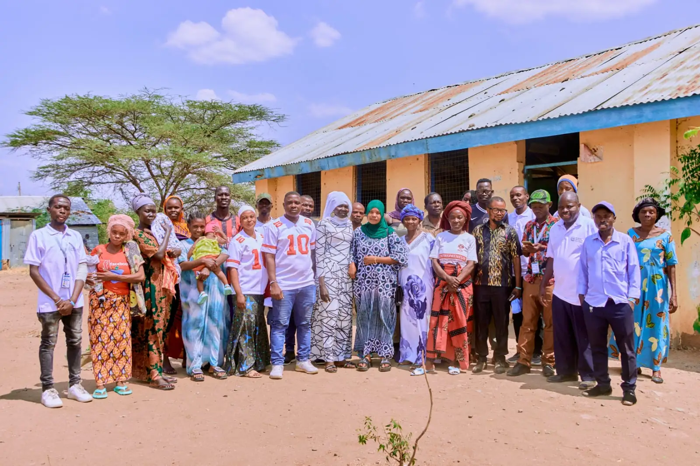

Community-led
Residents help identify problems, plan activities and run local solutions.
Read more →
Future Builders Refugee Organization is a refugee-led community organization in Kakuma, Kenya, working with refugees and host communities for peace, self-reliance and sustainable livelihoods.
Our programsResidents help identify problems, plan activities and run local solutions.
Read more →From peacebuilding and livelihoods to environment, health, education and culture.
Read more →NGOs, donors, CBOs, government institutions, and youth and women groups are welcome.
Read more →FBRO was founded in 2024 in Kakuma Refugee Camp by refugees who wanted to respond to the everyday challenges facing their communities: unemployment, few opportunities for young people, poverty, conflict, environmental problems, and limited access to education and skills.
We involve community members in identifying problems, planning activities and carrying out local solutions, working closely with youth groups, women groups, community leaders and other refugee-led organizations.
More about FBROA peaceful, empowered, and self-reliant community where refugees and host communities live with dignity and hope.
To support refugees and vulnerable host communities through community-led programs that promote livelihoods, education, peacebuilding, environmental conservation, and youth empowerment.


Partnerships and teamwork make our impact stronger and longer lasting.
We welcome collaboration with NGOs and humanitarian organizations, refugee-led organizations, community-based organizations, government institutions, donors and development partners, and youth and women groups.